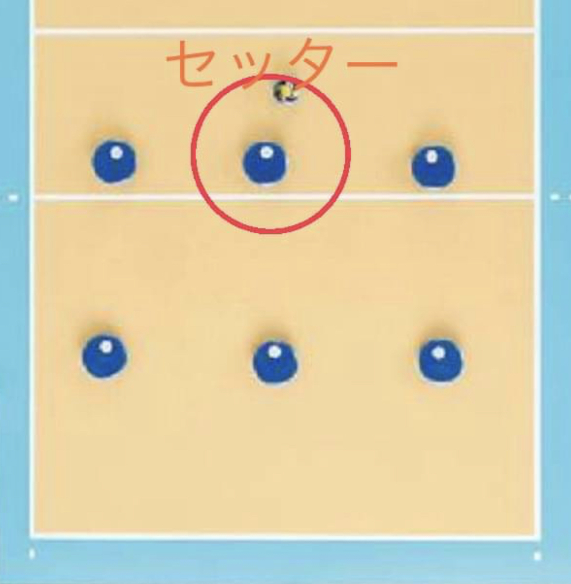

バレーボール-ローカルルール
-
初心者から経験者、現役とさまざまな方が参加されます。
ジャンボスポーツでは勝ち負けにこだわらず全員が楽しめるように協力をお願いします。
※経験者同士だけでボールを回したり、身長が大きいからとネット上のプレーを無理矢理強行するようなことはやめてください🫷
可能な限り3打で返すようにしましょう。
-
経験者は初心者の方や他の方がミスったり、変なところに飛ばしたなどしても攻めるたり変な顔して雰囲気を壊すようなことはないようにお願いします。
また、ミスったりした場合は優しく教えてください。
-
ローテーション制を導入していますが、ポジションの固定はしませんので理解をお願いします。
※前衛真ん中の方が基本的にはセッターをしてください。
1打目で崩れて難しい場合はその限りではありません。

- 初心者の方もミスっても大丈夫なので積極的にボールを取りに行ってください。
その際は怪我や接触防止のために「取る」、「ハイ」、「OK」などの声かけをお願いします。
-
ボールの受け渡しする際は足で蹴って相手に渡さないでください。
必ず、手で持ってから相手に渡しましょう。
- 試合で空きがありますが、必ず審判(ラインズ、得点、主審(経験者の方))と撮影(こちらで用意したiPhone2台)の協力をお願いします。
〇質問や疑問などありましたら気軽にジャンボまで聞いてください